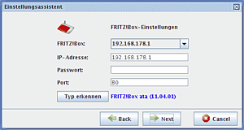
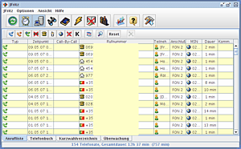

JFritz
Archivierte Anleitung
Dieser Artikel wurde archiviert, da er - oder Teile daraus - nur noch unter einer älteren Ubuntu-Version nutzbar ist. Diese Anleitung wird vom Wiki-Team weder auf Richtigkeit überprüft noch anderweitig gepflegt. Zusätzlich wurde der Artikel für weitere Änderungen gesperrt.
Zum Verständnis dieses Artikels sind folgende Seiten hilfreich:
JFritz  ist ein Java-Program, mit dem die auf der FRITZ!Box gespeicherte Anrufliste dauerhaft auf dem PC gesichert werden kann und für die Verwaltung einiger (siehe Liste unten) VoIP-/Telefon-Funktionen (zur Zeit ist das Editieren der VoIP-Einträgen noch nicht integriert, ist für spätere Versionen geplant) der Fritzbox-Familie mit integriertem VoIP. Den empfangenen Telefonnummern wird automatisch der Name und die Adresse des Anschlussinhabers zugeordnet, sofern diese Informationen im JFritz-Telefonbuch zu finden sind oder über die integrierte Rückwärtssuche möglich ist.
ist ein Java-Program, mit dem die auf der FRITZ!Box gespeicherte Anrufliste dauerhaft auf dem PC gesichert werden kann und für die Verwaltung einiger (siehe Liste unten) VoIP-/Telefon-Funktionen (zur Zeit ist das Editieren der VoIP-Einträgen noch nicht integriert, ist für spätere Versionen geplant) der Fritzbox-Familie mit integriertem VoIP. Den empfangenen Telefonnummern wird automatisch der Name und die Adresse des Anschlussinhabers zugeordnet, sofern diese Informationen im JFritz-Telefonbuch zu finden sind oder über die integrierte Rückwärtssuche möglich ist.
Die Anrufliste kann in im .cvs-Dateiformat exportiert und in anderen Programmen weiterverarbeitet werden, welche die Option bieten .cvs-Dateien zu importieren. Außerdem können mit JFritz ankommende Anrufe in Echtzeit auf dem PC signalisiert werden.
Entwickelt wird es von Benutzern aus dem ip-phone-forum.de .
Merkmale:
Abruf der Anrufliste von der Fritzbox und Löschung
Anrufliste Drucken / Exportieren (.CSV Datei)
Anrufliste Importieren (.CSV Datei)
Automatische Rückwärtssuche für Einträge in der Anrufliste
Automatische Updateabfrage beim Start
Anrufmonitor zu Überwachung von ab- und ankommenden Anrufen
5 Anrufmonitore stehen zur Auswahl
Automatisches Wählen von ein Anrufeintrags aus der Anrufliste bei Doppelklick auf diesem
Mehrere Filter für die Anrufliste zum Suchen und Sortieren
Kontakte importieren aus Thunderbird (.cvs-Datei)
Kompatibel mit allen Fritzboxen mit integriertem VoIP
Kurzwahlverzeichnis der Fritzbox ändern, abrufen und abgleichen
Signalisierung von Anrufen auf dem Desktop, intern oder über externes Programm
SIP-Nummern von der Box holen (editieren noch nicht möglich)
Telefonbuch
Telefonbuch exportieren (.csv-Datei)
Telefonbuch importieren (.xml-Datei)
Weitere Optionen und Funktionen siehe Handbuch
Voraussetzungen¶
Das Programm erfordert eine Java-Laufzeitumgebung (JRE), welche mindestens der Version 1.5 (Java 5) oder neuer entsprechen sollte.
Installation¶
Von der Projektseite die aktuelle Version von JFritz herunterladen.
Hinweis!
Fremdsoftware kann das System gefährden.
Nun ein Terminal [2] öffnen und folgende Befehle eingeben:
cd Downloadverzeichnis # den Ordner-Pfad zu dem JFritz Archiv angeben sudo tar -xzf ./jfritz-xxxx.tar.gz -C /opt/ # entpackt das Archiv [1] nach /opt/ sudo cp -Rf /opt/jfritz* /opt/JFritz # kopiert den Inhalt des Ordners /opt/jfritz-xxxx nach /opt/JFritz, welches automatisch angelegt wird sudo rm -R /opt/jfritz* # löscht den Ordner /opt/jfritz-xxxx sudo touch /opt/JFritz/jfritz.sh # legt die Datei an, die dann als Startskript für die Datei /opt/JFritz/jfritz.jar dient
Die oben beschriebenen Schritte kann man natürlich auch ohne das Terminal mit den Mitteln der genutzten Desktopumgebung erledigen. Dann öffnet man mit einem Editor mit Root-Rechten [5] die soeben angelegt Datei /opt/JFritz/jfritz.sh und fügt folgenden Inhalt ein:
#!/bin/sh cd /opt/JFritz/ java -jar /opt/JFritz/jfritz.jar # end
Dann speichert man die Datei und macht das Skript ausführbar und setzt einen symbolischen Link zum Verzeichnis /usr/local/bin, um das Programm ohne Wechsel in das Verzeichnis starten zu können. Dies kann man, wenn man möchte, ebenfalls per Befehl erledigen:
sudo chmod +x /opt/JFritz/jfritz.sh # macht das Skript ausführbar sudo ln -n /opt/JFritz/jfritz.sh /usr/local/bin/jfritz # setzt ein Link zum Skript nach /usr/local/bin um es ohne Pfadangabe zu starten sudo chmod -R 777 /opt/JFritz # gibt die Zugriffsrechte [7] frei
Achtung!
chmod -R 777 sorgt dafür, dass alle Benutzer Schreibzugriff auf die komplette JFritz-Installation haben. Das kann das System unsicher machen.
Nun kann JFritz mit jfritz gestartet werden [8]. Komfortabler ist es, einen Eintrag im Menü [3] oder in der Taskleiste anzulegen.
Benutzung¶
Nach dem ersten Start im "Menü -> Optionen -> Einstellungsassistent" auswählen - falls dieser nicht automatisch startet. Sprache auswählen und auf "Finish" klicken, danach startet der eigentlichen "Einstellungsassistent".
 | Hier die eigene Vorwahl eintragen, nach dem Schema wie im Bild zu sehen ist. |
|  | Hier die Daten genau so eintragen wie im Bild. Die Fritzboxen haben alle die gleiche IP, wobei 192.168.178.1 oder 192.168.178.254 angegeben werden kann. Außerdem ist es möglich, hier das Passwort einzufügen, welches das Gleiche ist wie das, das in der Weboberfläche eingegeben wird (falls eines vergeben ist). Die restlichen Einstellungen können nach eigenem Wunsch vorgenommen werden. Weitere Einstellungen sind unter "Optionen -> Look&Feel" und "Optionen -> Einstellungen" zu finden. |
|  | Zum Abholen der Anrufliste auf Klicken oben links in der Symbolleiste, die restliche Bedienung ist sehr intuitiv. |
Deinstallation¶
Um das Programm vollständig zu entfernen, muss man das Installationsverzeichnis /opt/JFritz/ (Root-Rechte benötigt) sowie die Einstellungen im versteckten Programmordner ~/.jfritz im Homeverzeichnis löschen. Per Befehl macht man dies in folgenden Schritten [2]:
rm -rf ~/.jfritz ## löscht den Ordner sowie dessen Inhalt sudo rm -rf /opt/JFritz ## löscht den Ordner sowie dessen Inhalt
Alternativen¶
Statt JFritz gibt es noch das Tool JAnrufmonitor . Dieses nutzt teilweise den Quellcode von JFritz und kann sich zusätzlich auch von anderen Geräten die Informationen holen, z.B. ISDN-Karten. Des Weiteren hat es mehr Funktionen, wie einen funktionierenden Server-Client-Betrieb.

 Weitere Artikel zum Thema FritzBox
Weitere Artikel zum Thema FritzBox- Erstellt mit Inyoka
-
 2004 – 2017 ubuntuusers.de • Einige Rechte vorbehalten
2004 – 2017 ubuntuusers.de • Einige Rechte vorbehalten
Lizenz • Kontakt • Datenschutz • Impressum • Serverstatus -
Serverhousing gespendet von